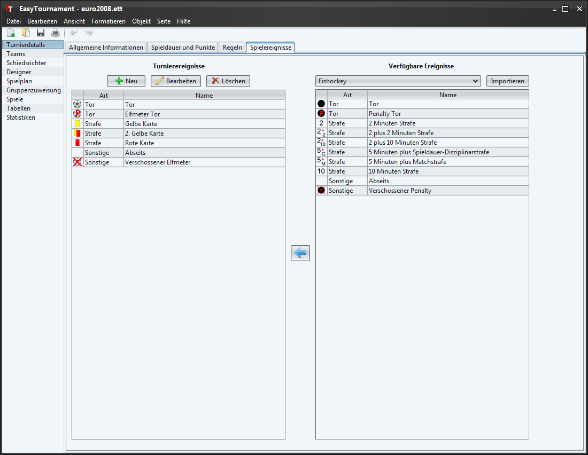
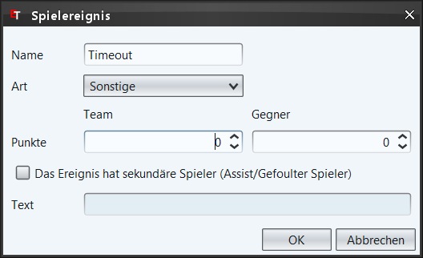
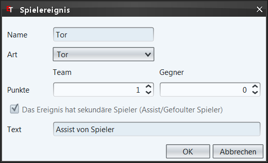

Auf dieser Seite können Spielereignisse erfasst werden, welche dann in den Spielberichten zu Auswahl stehen. Zudem können die Ereignisse in den Statistiken ausgewertet werden (z.B. Torschützenliste).
Auf der rechten Seite kann per DropDown-Liste die Sportart gewählt werden, von welcher man ein Ereignis vewenden möchte. Falls sie in einem anderen Turnier bereits eigene Ereignisse erstellt haben, können sie diese über die "Importieren" Schaltfläche einfügen.
Die Spielereignisse können sie mit der Pfeil-Schaltfläche oder per Maus zu ihrem Turnier hinzufügen und über die "Löschen" Schaltfläche oder Delete-Taste wieder gelöscht werden.
|  |  |
| Neues Spielereignis | Spielereignis bearbeiten |
Name des Ereignisses (z.B. Tor, Abseits, ...). Bei vordefinierten Spielereignissen kann dieses Feld nicht geändert werden, damit die Mehrsprachigkeit gewährleistet ist. Eigene Ereignisse werden in allen Sprachen gleich angezeigt.
Kategorie des Ereignisses: Tor, Strafe oder Sonstige
Anzahl der Punkte, welches dieses Ereignis einbringt (z.B. 1 beim Fussball für ein Tor oder 6 für einen Touchdown beim Football).
Für gewisse Ereignisse sind sogenannte sekundäre Spieler interessant. Beim Eishockey zum Beispiel der Assistgeber für die Scorer-Liste. Oder der gefoulte Spieler im Fussball um auswerten zu können, welcher Spieler am meisten gefoult wurde.